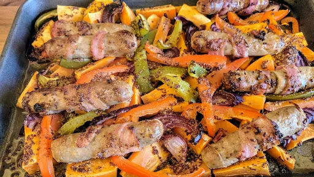

Honey-mustard sausage, bacon and sweet potato bake
45 mins
Serves 4

Ingredients
2tbsp clear honey
4tbsp wholegrain mustard
8
British pork sausages
4rashers smoked streaky bacon, halved lengthwise
1
red pepper, sliced
1
yellow pepper, sliced
2
red onions, sliced
750g sweet potato, sliced into wedges
2tsp olive oil
fresh parsley, to serve (optional)
salad, to serve (optional)
Instructions
Preheat the oven to 200°C/Gas 6. In a bowl, mix the honey and mustard with 1 tbsp hot water.
Wrap each sausage with a strip of bacon. Put them in a large roasting dish with the peppers, onions and sweet potato wedges, then pour over the honey mixture. Season and drizzle with the oil.
Roast for 30-35 minutes until the sausages are sticky and cooked through. Sprinkle with parsley and serve with a salad.